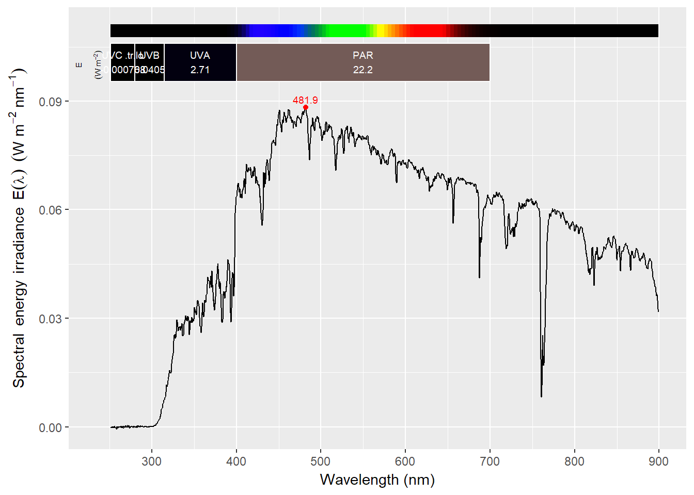

ooacquire 0.1.4.9003This short document only describes the high level functions, which allow spectral data acquisition. These are meant for interactive use as they provide many choices about instrument settings. We first show simple examples of their use, assuming That R, the needed R packages, Java JDE and Ocean Optics’ free OmniDriver runtime are all installed (see this package’s User Guide for details). Of course, to acquire irradiance, a suitable instrument calibration and correction method description should be also available. In the example below we use the examples included as part of the package. As the serial number stored with these data is validated against that retrieved from the instrument, the examples bellow will be usable as is only with our own instrument, rather than the one you may want to use.
NOTE: This vignette can be built even if a spectrometer is not connected as the code chunks with code that “talk” with the instrument are by default not evaluated.
All examples in vignettes use data and files included in the package. Data files in formats foreign to R, are stored in the "extdata" folder, as is the norm for R packages.
To reproduce any of the examples which use files as data input, it is best to make a local copy of the whole "extdata" folder. The files used in examples are organized into subfolders, but all example code assumes that its in being run with "extdata" or a copy of it as the current working folder.
folderpath <- system.file("extdata",package="ooacquire")
## file.copy(from = folderpath, to = ".", recursive = TRUE)We first load the R packages to be used.
library(photobiology)
library(photobiologyWavebands)
library(ggspectra)
library(ooacquire)
# print warnings at the time they are triggered
options(warn = 1)
# change this to TRUE to run acquisition examples
sr.online <- FALSEFirst plug in an Ocean Optics spectrometer to the USB port. Then loading the packages as above and executing the statement b elow above is all what is needed to start an interactive spectral-data acquisition session using default starting values for all settings.
acq_irrad_interactive(correction.method = ooacquire::MAYP11278_ylianttila.mthd,
descriptors = ooacquire::MAYP11278_descriptors)These code is run at the R console. I normally use the RStudio IDE, but this is not required as longs as graphical display is enabled. Alternatively, the statements can saved into an R script (as plain-text file) and then the file sourced from the R console. As scripts can be also run from the operating system shell or command prompt, it is possible, if desired to partly hide R from users’ view.
Within functions acq_irrad_interactive() and its companion acq_fraction_interactive() the user can modify settings through simple menus. These functions, however, have parameters which can be used to set initial settings to different values than their “built-in” defaults. In all cases when values supplied by the user fall outside those accepted by the connected instrument, these values will be adjusted to the nearest valid value.
Although we here discuss these settings in relation to parameter arguments, the same settings can be set interactively by the user. It should also be remembered that the functions described will in normal use set a suitable integration time automatically.
Simplest settings. Using no integration time bracketing as a single numeric value for HDR.mult corresponds to acquisition using a single integration time. Maximum and minimum total integration time as short or as long as allowed by the instrument with no scan averaging.
acq_irrad_interactive(HDR.mult = 1,
tot.time.range = c(0, Inf),
correction.method = ooacquire::MAYP11278_ylianttila.mthd,
descriptors = ooacquire::MAYP11278_descriptors)It is possible to use in the example above a value larger than one for HDR.mult even if a single integration time is used. This is unusual, but if we indeed would like to force clipping of part of the spectrum, this would be the way to achieve it.
For bracketing, one acquires spectral data with more than one integration time, and the resulting spectra are merged using the most suitable integration time for each wavelength region. Although usually two values are a good compromise, there is no built-in limitation in the package code. Using three or more values, combined with a very long total acquisition time of the order of minutes, can yield very good control of noise for light sources with stable output. Consequently, although the default setting HDR.mult = c(1, 10) tends to work well, settings like HDR.mult = c(1, 5, 25) may be useful in special circumstances.
In the next example, we set bracketing, with two values for integration time, with the long integration 10 times longer than the normal or short one (the same as the default, in this case). We set total acquisition time to a fixed length of 10 seconds. Once this setting is active, each time the integration time is automatically set, both the integration time and number of scans are adjusted so that total acquisition time is exactly 10 seconds, for both short and long integration times. This is useful when irradiance varies “randomly” with time and one desires to keep its effect on the acquired data stable.
acq_irrad_interactive(HDR.mult = c(1, 10),
tot.time.range = 10,
correction.method = ooacquire::MAYP11278_ylianttila.mthd,
descriptors = ooacquire::MAYP11278_descriptors)If long integration times are needed, the setting above may result in the use of suboptimal integration times, as the desired integration time may have be to be shortened until it becomes an exact fraction of the total acquisition time. To avoid this, we can supply instead of a single fixed value for the total acquisition time, a range of values.
acq_irrad_interactive(HDR.mult = c(1, 10),
tot.time.range = c(10, 20),
correction.method = ooacquire::MAYP11278_ylianttila.mthd,
descriptors = ooacquire::MAYP11278_descriptors)Sometimes we may want to avoid long integration times even at the cost of not using the whole dynamic range of the detector. For example, when following some fast kinetics, we would usually need the integration time not to exceed a certain time, say 50 milliseconds, we would simply use smaller values, such as tot.time.range = c(0.03, 0.05).
One problem with automatic setting of integration time is that depending on the stability of the light source we will need to set a different value for the target relative to the longest integration time that would result in no clipping during tuning. Parameter target.margin allows the user to set a safety marging different from the default of 0.1 (or 10%). The example below could help prevent clipping in cases when irradiance changes so fast that it could be up to 25% higher during actual measurement than during the preceding tuning of the integration time.
acq_irrad_interactive(target.margin = 0.25,
correction.method = ooacquire::MAYP11278_ylianttila.mthd,
descriptors = ooacquire::MAYP11278_descriptors)Here we group the acquisition of data where the quantities of interest are expressed relative to a reference. This is the case for transmittance, reflectance and absorptance. A single function allows the acquisition of transmittance and reflectance spectra. The same parameters as discussed for acq_irrad_interactive() in the section on irradiance are available in function acq_fraction_interactive(). We will here describe three additional parameters only present in this function. The first one is ref.value which needs to be supplied if the reference target is imperfect, such as a white reference patch which reflects less than 100%. The default is ref.value = 1, but this parameter not only aspects numeric values as argument but also transmittance or reflectance spectra for the target used as reference.
acq_fraction_interactive(ref.value = 0.97,
correction.method = ooacquire::MAYP11278_ylianttila.mthd,
descriptors = ooacquire::MAYP11278_descriptors)Parameters qty.out and type determine the class of object and the quantity stored in the returned objects. If the optical set-up used is for measuring specular spectral reflectance, we use the following code. This information will also be used when plotting the data.
acq_fraction_interactive(qty.out = "Rfr", type = "specular",
correction.method = ooacquire::MAYP11278_ylianttila.mthd,
descriptors = ooacquire::MAYP11278_descriptors)The examples in the previous section can be run only when a spectrometer is connected. Here we add one examples using files.
file_names <- list(light = c("irrad-files/light-short.txt",
"irrad-files/light-long.txt"),
filter = "irrad-files/flt-long.txt",
dark = c("irrad-files/dark-short.txt",
"irrad-files/dark-long.txt"))In this case, a call to a hight level function both reads five files with raw data, and converts these to a single spectral irradiance spectrum.
irrad.spct <-
s_irrad_corrected(x = file_names,
descriptor = which_descriptor("2016-10-11",
MAYP11278_descriptors),
correction.method = MAYP11278_ylianttila.mthd)## Descriptor cal_2016a selected for 2016-10-11The example above uses a protocol with integration-time bracketing plus subtraction of measured stray light. We can plot the result.
plot(irrad.spct)
The two functions described above, although useful for general spectral data acquisition, they are meant mainly as examples. In cases of routine measurements one could simplify menus by removing entries that are not needed, or even converting the functions to non-interactive, and possibly adding support for scheduled sequences of spectral data acquisitions. This should be fairly simple, not requiring advanced knowledge of the R language.
It is also possibly to combine lower level functions using R scripts instead of through writing higher level R functions from them. Several example scripts are included with the package. I recommend that you open them, and save them to your own working directory before sourcing them and or editing them.
You will need first to locate where in your computer’s file system the ‘ooacquire’ package is installed, and where the file you are interested is, and make a copy of it in your own workspace. Here we copy the script called "irrad-acq-interac.R".
filepath <- system.file("example-scripts", "irrad-acq-interac.R", package="ooacquire")
file.copy(from = filepath, to = ".")Here we copy all the example scripts.
folderpath <- system.file("example-scripts", package="ooacquire")
list.files(path = folderpath, pattern = ".*[.]R")
file.copy(from = list.files(path = folderpath, pattern = ".*[.]R", full.names = TRUE), to = ".")